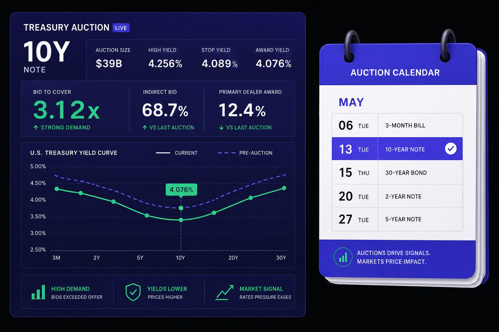
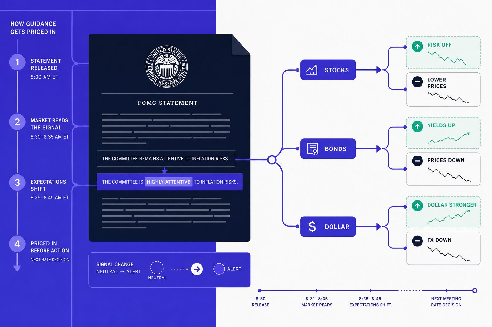
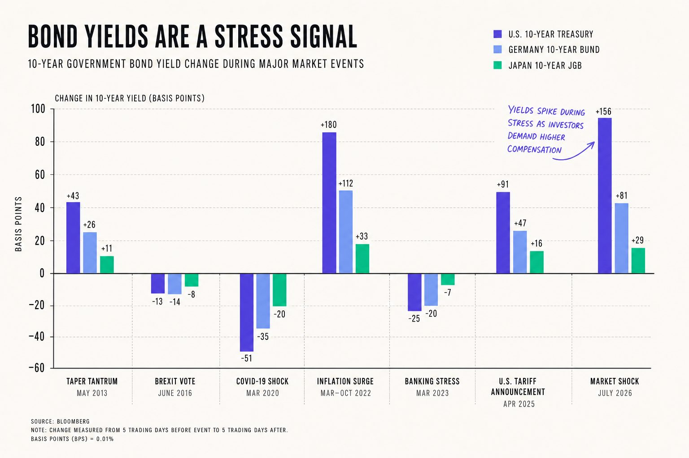
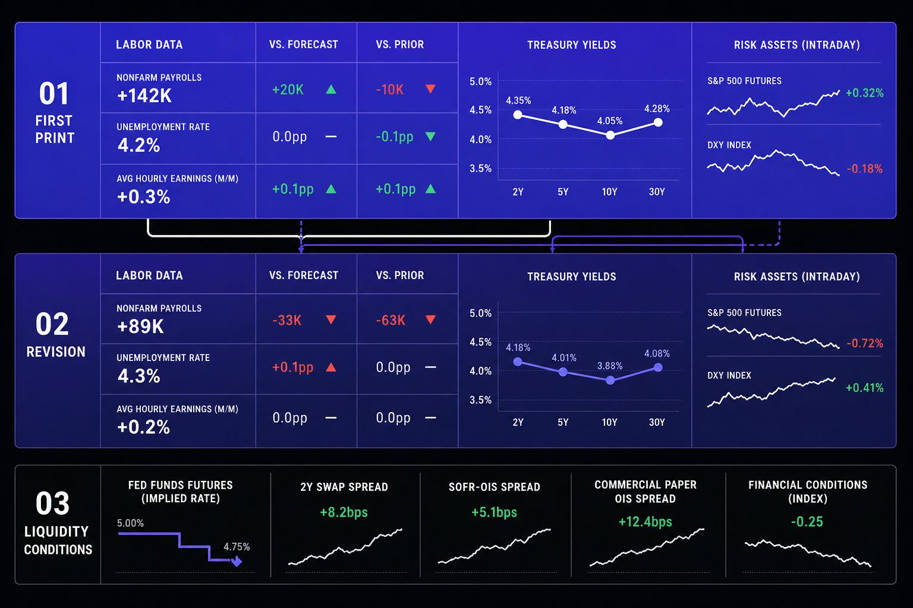
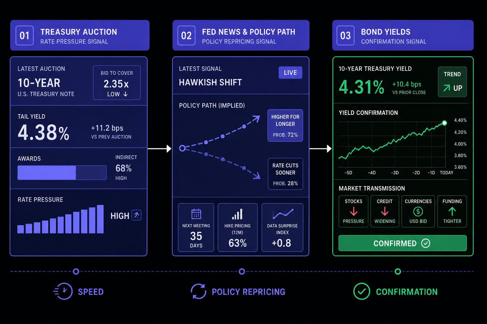

Trading Education
7 Economic Calendar Signals Every Trader Should Track
What if the economic calendar misses the signals that matter most? Serious traders often watch headlines, but the economic calendar can miss quieter clues that shift prices first. Bond market plumbing, Fed language, and later data revisions can reprice stocks, rates, and currencies within hours. According to Top Finance Stories From Week of September 14 - Business Insider, $300,000 can disappear into market process costs before bigger moves even begin. Data from Top Finance Stories From Week of September 14 - Business Insider also shows $100 can scale fast when intermediaries control access and timing. That same logic applies to hidden macro signals. This article compares seven subtle indicators by market impact, reliability, and ease of tracking. It is built for readers who want a sharper process around Fed news, bond yields, and treasury auction clues.
Table of Contents
- Track Treasury Auction Demand on the Economic Calendar
- 2. Read Fed News for Guidance Changes Before the Market Prices Them
- 3. Watch Bond Yields for Cross Market Stress Signals
- 4. Catch Labor Revisions and Liquidity Conditions Before They Snowball
- Economic Calendar Signal Comparison and Verdict
- Related Reading on Veritya Daily
Track Treasury Auction Demand on the Economic Calendar

A strong economic calendar includes every major treasury auction. These sales show real money demand for US debt. They often reset rate views faster than speeches do. For traders, that makes them a frontline signal for bond yields and the yield curve.
What to watch before the auction
The first check is simple. Watch the auction size and the note or bond maturity. A large 10-year sale carries a different message than a small 4-week bill. Context matters too, especially after hot inflation data or major Fed news.
Next, watch where the market is trading into the event. If dealers already demand higher yields, the setup is fragile. For example, a weak tone before a 30-year treasury auction can hint that buyers want extra concession. That often raises the risk of a poor result.
How to read tails, bid to cover, and indirect demand
Three terms matter most. First, watch the tail - when an auction clears at a higher yield than expected, demand is soft. A stop-through means the opposite, where buyers accepted a lower yield and appetite is stronger. Second, check the bid-to-cover ratio, which reveals how many bids arrived relative to the amount sold. Higher ratios usually suggest deeper demand.
The second is bid to cover. That shows how many bids arrived relative to the amount sold. Higher ratios usually suggest deeper demand. The third is indirect demand. Indirect bidders often include foreign buyers and large institutions. Strong indirect demand can calm the market fast.
Dealer takedown matters too. If primary dealers absorb a large share, end-user demand may be weak. That can leave more supply on dealer balance sheets. In turn, dealers may cheapen Treasuries after the result.
Why weak demand can lift yields fast
Weak auction demand can move markets in minutes. Poor demand pushes Treasury prices down and bond yields up. That can hit growth stocks first, since higher discount rates reduce the value of future earnings. Credit spreads can also feel pressure as financing conditions tighten.
This is why treasury auction results move bond yields. The auction is a live test of what investors require to fund government borrowing. If demand disappoints, the market must offer higher yields to clear supply. That is also how treasury auctions affect the stock market.
Best use case: traders who want an early read on rates pressure before it spreads into equities, credit, and the dollar. For a parallel process in digital assets, see Why Crypto Prices Move Suddenly (And How to Investigate).
2. Read Fed News for Guidance Changes Before the Market Prices Them

Fed news often moves markets before any rate change lands. That is why this part of the economic calendar matters so much. A single wording tweak can shift forward guidance and reset rate expectations fast. Stocks, bonds, and the dollar can all react within minutes.
The difference between policy action and policy drift
Policy action is the actual move. That means a rate hike, a cut, or balance sheet change. Policy drift is quieter. It shows up when officials keep rates steady but hint at a different path ahead.
For example, a statement may still hold rates unchanged. Yet one softer line on labor slack can make traders price earlier cuts. That can lift long bonds, pressure banks, and help rate-sensitive stocks. Fed news moves stocks and bonds because markets price the path, not just the meeting result.
Where guidance changes show up first
The first clues usually appear in five places. Readers should track statement edits, dot plot shifts, press conference wording, dissent from voting members, and repeated comments on inflation or labor conditions. On any economic calendar, the Fed decision itself is usually the most important event because it can reset pricing across nearly every major asset.
The statement often gives the cleanest before-and-after comparison. The dot plot can then show whether the committee sees fewer cuts or more. The press conference adds tone. A small phrase like “greater confidence” or “some slack remains” can move duration trades fast.
Historical market data shows sharp swings can signal how fast conditions change when Fed expectations shift. For example, the S&P 500 has moved more than 1.5% intraday on multiple FOMC announcement days in recent years. That volatility is not a Fed metric, but it is a useful reminder. Markets can reprice violently when expectations shift.
How to separate signal from speaker noise
Not every interview matters equally. Priority should go to official releases, the Chair, and current voters. Former officials, television panels, and offhand remarks create more noise than signal. That filter helps readers avoid chasing every headline.
For example, one governor may sound hawkish on Monday. Another may sound balanced on Tuesday. 5 most-read finance stories: Week of Jan. 2-6 found that 20% cost changes can matter in complex systems. Markets work the same way. Small language changes can cascade into new rate expectations, sector rotation, and fresh moves in bond yields.
Readers who want a tighter framework can pair this process with Jackson Hole 2026: The Fed's Payments Theme Is Crypto's Moment. That helps place Fed signals in a wider cross-asset context.
3. Watch Bond Yields for Cross Market Stress Signals

Bond yields give a fast verdict on macro news. They bundle growth, inflation, and funding stress into one price. That makes them a strong cross-check on any economic calendar surprise. For readers tracking Why Crypto Prices Move Suddenly (And How to Investigate), this same logic often explains sudden swings across risk assets.
Which maturities matter most
The two-year yield reacts fastest to policy expectations. It often jumps after inflation, jobs, or sharp Fed news. The ten-year yield matters because it blends policy views with growth expectations. The thirty-year yield adds a cleaner read on long-run inflation risk and term premium.
For example, a hot payroll report can lift the two-year first. That move says traders expect tighter policy or fewer cuts. If the ten-year rises with it, the message broadens. If the thirty-year leads instead, long-duration risk may be repricing faster.
Why the curve matters more than a single yield
A single yield can mislead. The yield curve shows how pressure spreads across time. A flattening curve often signals tighter policy expectations. A steepening curve can point to firmer growth, rising inflation expectations, or a higher term premium.
This is why investors should track spreads, not headlines alone. The two-year versus ten-year spread is the cleanest starting point. The five-year versus thirty-year spread also helps. It can show whether long-end supply and inflation fears are growing.
How yields confirm or reject macro headlines
Bond yields move after economic data releases because fresh numbers change expected policy, inflation, and borrowing conditions at once. For example, weak retail sales may hurt stocks on the headline. Yet if real yields fall and breakevens stay calm, the bond market may signal softer growth, not fresh inflation stress.
That distinction matters. Rising front-end bond yields can hit expensive tech and crypto first. A curve steepening move can favor banks, cyclicals, or value shares. After a treasury auction or major data print, the best use case is simple: check whether rates confirm the story. Readers who follow How to Research Cryptocurrency Market News Before Making Investment Decisions can use the economic calendar the same way.
4. Catch Labor Revisions and Liquidity Conditions Before They Snowball

The economic calendar shows the first print. Markets often move on the second draft. That is why labor revisions and liquidity conditions deserve equal weight. They often explain sharp reversals after a calm headline, especially when bond yields and risk assets suddenly diverge.
Why revisions matter more than the headline print
Nonfarm payrolls get the attention first. Revisions often change the real signal later. A solid headline can hide weaker hiring underneath. For example, prior month payroll cuts can erase the market’s first bullish read.
The same applies to benchmark updates and participation shifts. A lower participation rate can flatter the unemployment rate. A downward revision can weaken the growth story fast. That matters most when traders had already priced strong labor momentum.
The indicators that move markets most after revisions are payroll changes, unemployment rate revisions, average hourly earnings updates, and labor force participation shifts. These changes can alter rate expectations quickly. They also reshape the tone around Fed news. Readers tracking market whipsaws should treat labor revisions as part of the real release, not cleanup detail.
The overlooked role of liquidity conditions
Liquidity conditions decide how far a data surprise travels. Loose funding can absorb bad news. Tight funding can turn a minor miss into a broader selloff. That is why reserve trends, repo stress, and credit spread behavior matter after major releases.
For example, a soft payroll revision may not do much alone. Add tighter bank reserves and rising funding stress, and the reaction can spread. Yields can swing harder. Credit can cheapen. Equities and crypto can then follow, a pattern explored in Why Crypto Prices Move Suddenly (And How to Investigate).
According to Federal Reserve research on market cycles, delayed market adjustments often follow an 8-hour trading cycle pattern. Markets have a similar rhythm. The first move gets attention. The delayed adjustment often does more damage.
How bond buybacks fit into the puzzle
Bond buybacks add another second order clue. They can support market function by improving off the run liquidity. They can also signal that policymakers are watching market plumbing closely. That matters when the economic calendar looks quiet but price action feels unstable.
Market history shows that major announcements can reshape sentiment quickly. In markets, a buyback announcement can do the same. It can steady trading, narrow stress signals, and change how investors read treasury auction demand and future bond yields. Research from 5 most-read finance stories: Week of Jan. 2-6 provides context on how financial news cycles evolve.
Economic Calendar Signal Comparison and Verdict

Set side by side, these signals do different jobs well. Treasury auction data wins on speed. It gives the market an instant read on rates pressure. Fed news ranks highest for policy repricing. It can change the path of cuts, hikes, and risk appetite fast. Bond yields are the most reliable confirmation tool. They show whether the first reaction has real support across markets. On accessibility, Fed news is easiest for most readers to follow, while auction data takes more practice. On cross market impact, yields remain the broadest signal because they connect stocks, credit, currencies, and funding conditions in one move.
The practical edge comes from sequence, not prediction. Start with the economic calendar and note when auctions, Fed events, and labor reports cluster together. Then judge the first move by the signal best built for that moment. Auctions are best when rates react in real time. Fed news matters most when language shifts the policy path. Yields matter most when confirmation is needed. If the initial move starts to fade, labor revisions and liquidity conditions become the better follow through tools. They often explain why a clean breakout stalls, reverses, or spreads into other assets.
That is the real verdict. The economic calendar works best as a layered system, not a list of isolated events. Each signal answers a different question. Together, they form a cleaner process for spotting what matters, confirming what is real, and avoiding weak first impressions.
Markets will keep reacting first and explaining later, so the sharper edge will stay with readers who track signals in layers, not headlines in isolation.
Want to learn more? Learn More to explore how this framework can be applied.